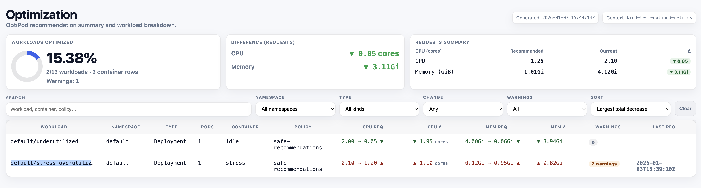

Impact Report (before Auto)
OptiPod is safe by default in Recommend mode. Before you opt in to mode: Auto, it helps to estimate the blast radius: what will change, and by how much?
This repository includes an impact report script that reads OptiPod’s per-workload recommendation annotations and generates a sortable HTML summary.

How the report works
The impact report consolidates individual workload recommendations into a unified view:
- Scans all workloads in the cluster for OptiPod recommendation annotations
- Aggregates recommendations from individual workload annotations into totals
- Calculates replica-weighted impact (recommendation delta × number of pods)
- Provides multiple output formats: HTML for human review, JSON for automation
- Highlights potential issues like requests exceeding limits
What the report shows
- Only workloads that have OptiPod recommendation annotations.
- Current vs recommended CPU and memory requests.
- Replica-weighted totals (delta multiplied by pods) to estimate cluster-level impact.
- Warnings (for example: when
updateRequestsOnly=truebut recommended requests would exceed existing limits).
Prerequisites
kubectlconfigured to access your clusterjqinstalled locally
Generate the report
From a clone of this repo:
./optipod-recommendation-report.sh -o html -f optipod-impact.htmlOr run the script directly from GitHub:
curl -fsSL https://raw.githubusercontent.com/Sagart-cactus/optipod/main/optipod-recommendation-report.sh -o optipod-recommendation-report.sh
chmod +x optipod-recommendation-report.sh
./optipod-recommendation-report.sh -o html -f optipod-impact.htmlOpen the file in a browser:
open optipod-impact.htmlOr generate a JSON report for programmatic analysis:
./optipod-recommendation-report.sh -o json -f optipod-impact.jsonHow to use it for Auto adoption
- Start with
mode: Recommendand let OptiPod produce recommendations. - Generate the impact report and review totals and warnings.
- Adjust policy bounds and update strategy if needed.
- Switch the policy to
mode: Autoonly after the report looks safe.
How to read the HTML report
Cards
- Workloads optimized:
workloads with recommendations / workloads scannedand the percent. “Container rows” is the number of containers with recommendations. - Difference (Requests): replica-weighted total delta across pods (Σ (recommended − current) × pods).
▼means decrease;▲means increase. - Requests summary: replica-weighted totals for Recommended vs Current, plus
Δ(same sign convention).
Table columns
- Workload / Namespace / Type / Pods / Container / Policy: identifies what would be impacted and how many pods the change would affect.
- CPU req / Mem req: current → recommended values (shown in cores/GiB for scanability). Hover to see raw values (m/Mi) from the workload spec/annotations.
- CPU Δ / Mem Δ: replica-weighted total delta across pods for that row.
- Warnings: count badge; hover for details (for example: requests exceeding existing limits when
updateRequestsOnly=true). - Last rec: when OptiPod last wrote recommendations to the workload.